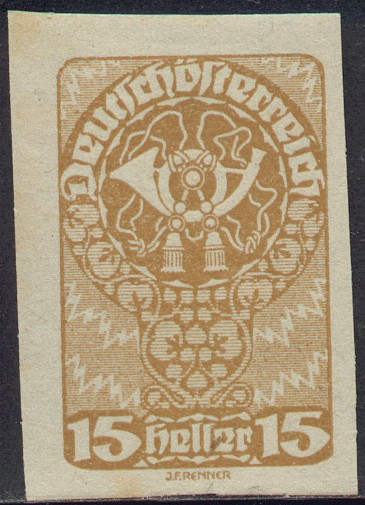
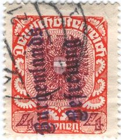

Return To Catalogue - Austria overview
Note: on my website many of the
pictures can not be seen! They are of course present in the
catalogue;
contact me if you want to purchase the catalogue.
For issues of 1916 to 1918 click here.
Posthorn
3 h grey 6 h orange 12 h blue 15 h brown (imperforated or perforated) 25 h violet (imperforated or perforated) 60 h olive (imperforated or perforated) One headed eagle, small size
5 h green (imperforated or perforated) 5 h grey (imperforated or perforated) 10 h red (imperforated or perforated) 10 h orange (imperforated or perforated) 25 h blue 45 h olive 1 K red on yellow 1 K blue One headed eagle, larger size


80 h red 1 K brown 1 1/2 K green 2 K blue 3 K green (two colours 1921) 4 K red and lilac (1921) 5 K violet and red (1921) 7 1/2 K yellow and brown (1921) 10 K violet and blue (1921) Woman planting tree


20 h green 30 h brown (imperforated or perforated) 40 h violet (imperforated or perforated) 40 h red 50 h blue Parliament building
2 K orange and black 2 1/2 K olive 3 K blue and brown 4 K red and black 5 K black 7 1/2 K lilac 10 K green and brown 20 K violet and red 50 K black on yellow (1921)
4 K with inverted center
The values 4 K and 20 K exist with center inverted (extremely rare).
Value of the stamps |
|||
vc = very common c = common * = not so common ** = uncommon |
*** = very uncommon R = rare RR = very rare RRR = extremely rare |
||
| Value | Unused | Used | Remarks |
| All values | vc to c | vc to c | |
Non-issued airmail stamp? 2 K with 'Flugpost' overprint

5 h grey on yellow 10 h brown 15 h grey 20 h green on yellow 25 h blue on yellow 30 h violet on blue 40 h brown on red 50 h green on blue 60 h lilac on yellow 80 h blue 1 K orange on grey 1 1/2 K green on yellow 2 K brown 2 1/2 K blue 3 K green and red 4 K lilac and brown 5 K green 7 1/2 K red 10 K blue and green 20 K red and violet
Value of the stamps |
|||
vc = very common c = common * = not so common ** = uncommon |
*** = very uncommon R = rare RR = very rare RRR = extremely rare |
||
| Value | Unused | Used | Remarks |
| All values | c | c | |


Perforated 5 h grey on yellow 10 h red on red 15 h yellow 20 h green on blue 25 h lilac on red 30 h brown on yellow 40 h red on yellow 50 h blue on blue 60 h olive on grey 80 h red 1 K brown 2 K blue Imperforate 2 1/2 K red 3 K blue and green 4 K red and violet 5 K blue 7 1/2 K green 10 K green and red 20 K lilac and brown
Value of the stamps |
|||
vc = very common c = common * = not so common ** = uncommon |
*** = very uncommon R = rare RR = very rare RRR = extremely rare |
||
| Value | Unused | Used | Remarks |
| All values | c to * | c to * | |
According to 'The Serrane Guide', many forged overprints exist. No further information is available to me.

7 1/2 K on 15 h brown
Value of the stamps |
|||
vc = very common c = common * = not so common ** = uncommon |
*** = very uncommon R = rare RR = very rare RRR = extremely rare |
||
| Value | Unused | Used | Remarks |
| 7 1/2 on 15 h | vc | vc | |


2 h violet 4 h brown 5 h grey 6 h blue 8 h green 9 h yellow 10 h red 12 h blue 15 h lilac 18 h green 20 h orange 30 h brown 45 h green 60 h red 72 h brown 90 h violet 1.20 K orange 2.40 K green 3 K grey
Note, that these stamps exist with private perforations, example:

Value of the stamps |
|||
vc = very common c = common * = not so common ** = uncommon |
*** = very uncommon R = rare RR = very rare RRR = extremely rare |
||
| Value | Unused | Used | Remarks |
| All values | vc | vc | |


{kind=link}
{kind=link}
{kind=link}